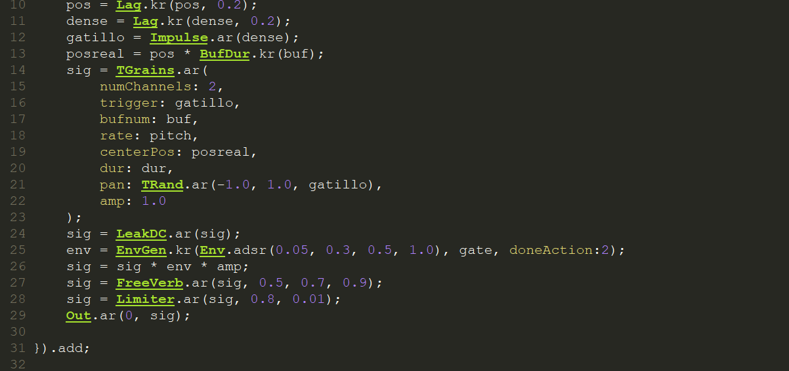

Composer, pianist & data scientist
Research in Artificial Intelligence, SuperCollider, and Electroacoustic Synthesis.
Santiago, Chile.

Luis Saavedra Carretero is a composer, pianist, and data scientist whose interests converge on the research and application of deep learning to creative processes within notated music traditions. He also explores electroacoustic music through the creation of manual synthesizers, drawing conceptual and aesthetic inspiration from figures like Eliane Radigue, Vangelis, and the work of Carl Jung.
He studied both piano and composition at the Universidad de Chile, concurrently pursued a degree in Computer Engineering at Duoc UC, and later completed a Master's in Data Science at the Pontificia Universidad Católica de Chile.
Contact: lasc.95@hotmail.com